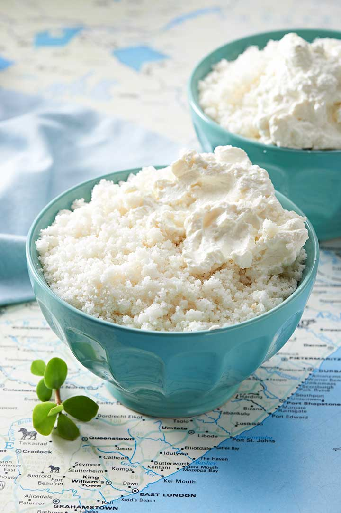
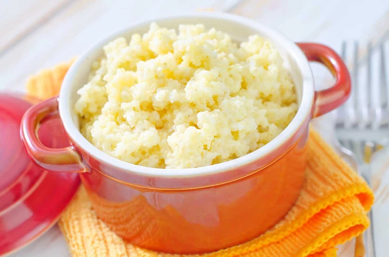

Umphokoqo

Description
Phutu (Umphokoqo or Umvubo) is a traditional summer dish, especially common to the Xhosa people. It's a type of crumbly pap made of maize meal simmered in water. The cooked porridge is cooled and served with sour milk poured over it.
Ingredients
- 500 ml water
- 5 ml salt
- 3 cups of maize meal
Directions
- Bring the water and salt to boil in a pot.
- Add the maize meal, and cover with a lid and let it boil.
- Once it is boiling, stir with a fork until the water is absorbed. This will create a nice rough texture.
